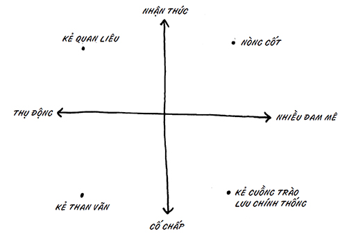

Bạn phải trở thành không thể thiếu để vươn lên trong nền kinh tế này. Cách tốt nhất là hãy trở nên ấn tượng, uyên bác – một nghệ sĩ, một người mang theo quà tặng – để lãnh đạo. Cách tệ nhất là quy phục và trở thành một bánh răng trong hệ thống khổng lồ.
Bạn cần gì để lãnh đạo?
Điểm khác biệt mấu chốt chính là khả năng tiến bước trên con đường của mình, khám phá một lộ trình từ nơi này đến nơi kia mà chưa ai mở đường, đo lường hay định ra. Nhiều lúc chúng ta muốn người khác bảo chính xác ta phải làm gì, và đó đích thực là cách tiếp cận sai.
Những thợ cắt kim cương có sự hiểu biết đích đáng về viên đá trong tay họ. Họ có thể chạm vào và nhìn thấy chính xác các đường cắt tốt nhất; họ biết thế. Những nghệ sĩ tài ba nhất cũng làm thế. Họ thấy và hiểu những thách thức phía trước, mà không phải mang theo gánh nặng kỳ vọng hay quyến luyến từ người khác. Thợ cắt kim cương không tưởng tượng ra viên kim cương anh ta muốn chỉ thấy viên kim cương mình có thể cắt được.
Trông thấy, nhận thức và prajna
Bạn không thể vẽ ra tấm bản đồ trừ khi thấy được thế giới như nó vốn dĩ. Bạn phải biết mình đang ở đâu và đi đến đâu trước khi có thể tìm ra cách đến đó.
Không ai có được một thế giới quan minh bạch. Thực ra, chúng ta đều mang theo một thế giới quan cá nhân – những thiên kiến, kinh nghiệm và kỳ vọng tô điểm nên cách chúng ta nhìn ngắm thế giới.
Nhà đầu tư mạo hiểm có một thế giới quan được định hình bởi kinh nghiệm của ông ta trong việc trợ vốn cho hàng tá công ty suốt nhiều năm. Ông nhớ đợt bong bóng cuối cùng và cả đợt bong bóng trước đó, và có những “vết sẹo” để chứng minh điều đó. Thế nên, khi bạn trình bày kế hoạch kinh doanh của mình với ông ta, ông không chỉ thấy kế hoạch của bạn mà ông còn thấy tiếng vọng của những kế hoạch trong quá khứ. Ông nhớ lại những con người khác, những ngày tháng khác, các dự án khác. Và những ký ức ấy tô điểm cho nhận định của ông.
Một nhân viên trung thành cũng có thế giới quan riêng. Cô ấy muốn một nơi làm việc ổn định, và cô ấy tin tưởng ở bạn. Nên khi bạn trình bày cho cô ấy kế hoạch của mình, thế giới quan của cô sẽ thay đổi những cảm xúc và đánh giá đối với kế hoạch đó.
Và người luật sư, đối thủ, kẻ hoài nghi và mẹ chồng cũng đều có thế giới quan, những thiên kiến và kỳ vọng của riêng họ. Tất nhiên, chẳng ai trong chúng ta biết rõ sự thật tuyệt đối, nhưng mục tiêu chính là tiếp cận tình huống với ít thiên kiến nhất có thể.
Thế nên, nhà quản lý và nhà đầu tư tìm kiếm một nhân viên có nhận thức, tức khả năng nhìn nhận bản chất của mọi thứ. Trong Phật giáo, đây gọi là prajna. Một cuộc sống không chấp trước và áp lực có thể đem lại cho bạn sự tự do để thấy mọi thứ như bản chất của chúng, và gọi tên chúng như cách bạn thấy chúng. Nếu có kỹ năng này, bạn sẽ trở thành tài sản trong mắt bất kỳ tổ chức nào.
Tất nhiên, không phải ai lúc nào cũng làm được điều này. Khi dự tuyển vào đại học, chúng ta đều gắn mình với kết quả, do đó không nhìn thấy thực tại của quy trình. Khi công ty chúng ta cắt giảm nhân sự, chúng ta gắn mình với kết quả, do đó không nhìn thấy sự chân thực của tình huống. Hết lần này đến lần khác, cứ đến những thời khắc cần nhìn nhận những phương án của mình rõ ràng nhất, chúng ta lại bế tắc.
Nhìn rõ không phải là chuyện dễ dàng
Đó là công việc khó khăn, và cũng là lý do khiến nó hiếm hoi và đáng giá.
Nhìn rõ nghĩa là có khả năng xem xét một kế hoạch kinh doanh từ quan điểm của nhà đầu tư, nhà khởi nghiệp và thị trường. Điều đó rất khó.
Nhìn rõ nghĩa là có khả năng tham gia cuộc phỏng vấn tìm việc như thể bạn không phải người phỏng vấn hay ứng viên, mà là ai đó quan sát một cách bình thản như một bên thứ ba.
Nhìn rõ nghĩa là bạn đủ khôn ngoan để biết khi nào một dự án sắp thất bại, hoặc đủ dũng cảm để kiên trì khi đồng nghiệp của bạn lo tháo chạy đến chỗ cao.
Từ bỏ thế giới quan của mình nhằm thử tiếp nhận thế giới quan của người khác là bước đầu tiên giúp bạn có thể nhìn thấy điều họ đang thấy.
Cố ý khó chịu
Chiếc xe đỗ bên người không ngừng bấm còi inh ỏi. Thực ra, không phải bản thân chiếc xe mà là người ngồi trong xe. Tôi không thể giải quyết chuyện đó, thật khó chịu làm sao.
Đêm hôm sau, gió thổi rất mạnh. Cứ cách vài phút, một chiếc lá hoặc cành con lại đập vào cửa sổ nhà tôi. Điều an ủi là tôi biết mình an toàn trong nhà. Nhưng tôi phải đi làm xa.
Vậy điều khác biệt là gì?
Tôi đang diễn thuyết. Micro bỗng nhiên ngưng phát tiếng. Một anh chàng trong nhóm phụ trách sân khấu do làm việc quá sức đã quên thay pin cho nó trước khi tôi bắt đầu. Tôi khó chịu. Suýt thì nổi đóa. Ngay lúc này đây, tôi chẳng quan tâm anh ta làm việc quá sức thế nào, hay phải làm bao nhiêu việc. Tôi chỉ nghĩ anh ta độc ác ra sao, hoặc đã cố ý phá bĩnh tôi chẳng vì lý do gì. Thế là toàn bộ nỗ lực vất vả hóa thành công cốc chỉ vì một lỗi cẩu thả. Tôi tiến đến lấy chiếc micro dự phòng, nhưng tôi đã mất nhịp.
Vài tuần sau đó, lại một bài diễn thuyết khác. Bóng đèn trong máy chiếu bỗng cháy giữa chừng. Không ai lường được chuyện đó. Chỉ là tự dưng như thế. Nhưng tôi không hề vấp và vẫn hoàn thành bài nói dù không có slide.
Chúng ta rất dễ trấn tĩnh khi phải đối phó với tình huống ngẫu nhiên. Mọi chuyện cứ xảy ra thôi. Chúng ta không nổi giận khi nghe tiếng chim hót, hay thậm chí tiếng sấm rền giữa một vở kịch. Nhưng nếu một chiếc điện thoại di động đổ chuông, đó lại là câu chuyện hoàn toàn khác. Chúng ta phải ngồi xuống vì giận sôi tiết, như thể sự sôi tiết đó sẽ gửi đi những xúc cảm khủng khiếp đến kẻ vi phạm một cách thần kỳ, để hắn ta không bao giờ dám tái phạm.
Nòng cốt hiểu rằng việc tức giận do micro hết pin sẽ không thể giúp pin đầy trở lại. Và việc dạy cho anh chàng phụ trách sân khấu một bài học cũng vô nghĩa và chẳng giúp gì nhiều. Thế nên, hãy đối mặt với điều đó.
Nếu bạn chấp nhận rằng con người khó thay đổi, đồng thời đón nhận (thay vì nguyền rủa) sự độc nhất mà mỗi người đem lại, bạn sẽ hướng thế giới đến những điều tốt đẹp và hiệu quả hơn. Và bạn cũng sẽ ra quyết định đúng đắn hơn.
Dạy cho ngọn lửa một bài học
Lửa rất nóng. Lửa là như thế. Nếu bị lửa đốt, bạn có thể tức giận với chính mình, nhưng tức giận với lửa sẽ chẳng giúp bạn khá hơn bao nhiêu. Và cố gắng dạy cho lửa một bài học để nó thôi nóng vào lần tới là việc làm vô ích.
Chúng ta có khuynh hướng bỏ qua cho ngọn lửa, vì nó không phải là con người. Nhưng con người cũng giống thế, ở chỗ họ sẽ chẳng thay đổi quá sớm.
Tuy vậy, rất nhiều người (hẳn là đa số?) trong tổ chức đang xử lý những mối tương tác của họ như thể họ có nghĩa vụ dạy cho người khác một bài học vậy. Chúng ta lập ra các chính sách, thù hằn và tập trung vào quá khứ vì lo rằng nếu chúng ta không làm thế, sẽ có người thoát được chuyện đó mà chẳng hề hấn gì.
Thế nên, khi một tài xế tạt đầu xe của chúng ta, chúng ta sẽ la hét và quát tháo. Chúng ta nói mình làm thế là để gã ấy học được bài học và không gây nguy hiểm cho người khác, nhưng tất nhiên, gã sẽ không nghe bạn. Một kẻ có thế lực trong ngành truyền thông đã đánh cắp bài viết của tôi vào năm 1987, và tôi không còn nói chuyện với hắn từ dạo ấy. Tôi cược rằng hắn còn chẳng biết tôi tồn tại. Thế là quá đủ để dạy cho hắn một bài học.
Khả năng nhìn nhận bản chất của thế giới bắt đầu khi bạn hiểu rằng: Có lẽ việc của bạn không phải là thay đổi những thứ không thể thay đổi. Đặc biệt nếu hành động cố gắng thay đổi đó ngăn cản quá trình hoàn thành mục tiêu của bạn.
Những thành tố của sự cố chấp
Dấu hiệu đầu tiên của sự cố chấp là bạn cố gắng dùng siêu năng lực điều khiển đồ vật, suy nghĩ hòng kiểm soát từ xa điều người khác nghĩ về bạn và công việc của bạn. Chúng ta đều từng làm thế.
Bạn dốc hết sức vì một việc gì đó, lần đầu giới thiệu một dự án đặc biệt, hoặc tham dự một cuộc họp vô cùng quan trọng. Bạn đã làm tất cả những gì có thể, và giờ đám đông đang quyết định dựa trên phản ứng của họ. Bạn có đang nhăn trán và mong mỏi họ đưa ra lựa chọn không? Thứ năng lượng tập trung để điều khiển trí não sẽ khiến bạn kiệt sức và hoàn toàn vô ích.
Bạn sẽ tự khiến mình kiệt sức trong nỗ lực này, và nó sẽ không bao giờ thành công. Chưa ai từng nói: “Tôi mừng vì đã dành hàng giờ xoay chuyển tình thế này nhiều lần trong đầu mình đêm qua, vì điều đó sẽ giúp tôi chuẩn bị cho cuộc họp hôm nay.”
Dấu hiệu thứ hai của sự cố chấp là cách bạn xử lý tin xấu. Nếu tin xấu làm thay đổi trạng thái cảm xúc hoặc cách bạn suy nghĩ về bản thân, thì bạn đã quá băn khoăn về kết quả mình nhận được. Lựa chọn thay thế là hãy hỏi: “Nó không thú vị sao?” Hãy học điều bạn có thể học, rồi bước tiếp.
Tất nhiên, chúng ta luôn làm thế. Bạn chơi bắn bóng với chiếc máy bắn bóng mới và nhận ra cần gạt bên trái không hoạt động như cách bạn mong đợi. Nhưng cảm xúc của bạn không xìu xuống khi quả bóng trượt vào lỗ. Không, bạn nhận ra điều đó, học hỏi từ nó và chơi quả bóng tiếp theo hay hơn. Bạn đã nhận thức được. Bạn có thể thấy điều gì đang diễn ra và học hỏi được từ nó. Cần gạt không có thù oán gì với bạn, và quả bóng trượt vào lỗ cũng không công kích cá nhân bạn. Nó chỉ xảy ra thôi.
Những mối tương tác trong đời thực thường tạo cảm giác phức tạp hơn một chiếc máy bắn bóng. Chúng ta gán động cơ, âm mưu và thù hằn cho những nơi không hề có. Những khách hàng giận dữ đó không thức dậy vào buổi sáng và quyết định sẽ hủy hoại cả ngày của bạn, không hề! Họ chỉ tức giận thôi. Đó không phải là chuyện cá nhân, không phải là chuyện lý lẽ và chắc chắn không mang hàm ý bạn có đáng bị thế hay không. Nó chỉ xảy ra thôi. Thế giờ bạn định sẽ xử lý chuyện đó như thế nào?
Khi phản hồi của chúng ta biến thành phản ứng và ta bắt đầu dạy cho người khác một bài học, chúng ta sẽ thua. Chúng ta thua vì hành động dạy dỗ ai đó hiếm khi thay đổi được họ, và không bao giờ giúp một ngày của bạn trở nên khá hơn, hay khiến công việc trở nên hiệu quả hơn.
Hai nguyên nhân gây khó khăn cho việc nhìn trước tương lai
Sự cố chấp đối với kết quả sẽ kết hợp với sự phản kháng và nỗi sợ thay đổi.
Thế đấy!
Bạn có đủ mọi thông tin mà người khác có. Nhưng nếu có chủ ý trong việc tạo ra một tương lai mang lại cảm giác an toàn, bạn sẽ sẵn sàng phớt lờ tương lai có thể xảy ra.
Quát tháo trọng tài
Tony là một bình luận viên thể thao chuyên nghiệp. Anh có thể tường thật một trận đấu trên đài phát thanh với sự hào hứng và chi tiết khiến bạn cảm giác như thể đang có mặt tại đó. Anh chứng kiến những gì đang diễn ra và thuật lại cho bạn biết.
Trong thời gian rảnh rỗi, Tony rất thích chơi bóng chày giao hữu. Khi vào cuộc, nhận thức của anh biến mất. Một quyết định tồi của trọng tài sẽ khiến anh tức điên. Anh gào thét và bồn chồn. Mỗi quyết định đều tạo cảm giác như thể nó chống lại anh và đội của anh, và anh chắc chắn trọng tài đang muốn anh thua cuộc. Anh có thể mất đến năm phút mới trấn tĩnh để thi đấu.
Câu hỏi cốt yếu về prajna là phải đối phó với trọng tài ra sao. Nếu chắt lọc các quyết định thông qua quan điểm thiên lệch của mình, tất nhiên, bạn sẽ buồn bực. Ai lại không như thế? Thách thức ở đây là xác định xem sự chắt lọc đó có giúp bạn tiến lên hay không?
Nếu bạn có thể xem xét những điều xảy ra trong thế giới của mình và nói “Đây là khuôn mẫu” hoặc “Ồ, thú vị đấy, mình thắc mắc tại sao”, thì bạn nhiều khả năng sẽ đáp trả hiệu quả hơn nhiều so với khi phản ứng: “Sao hắn dám?”
Nỗ lực có thể thay đổi mọi thứ
Một khía cạnh hấp dẫn của việc kinh doanh và phong trào có tổ chức là có một sự tương quan nào đó giữa niềm đam mê với nỗ lực mà mọi người bỏ ra cho một dự án, cho kết quả.
Nhưng điều này không đúng với thời tiết. Hãy chấp nhận dự báo thời tiết cho một ngày, vì bạn chẳng thể làm gì cả. Nhưng thị phần, phát kiến, các cuộc thương thuyết, mối quan hệ giữa người với người – ta có thể dịch chuyển chúng bằng vốn hiểu biết và nỗ lực đúng đắn.
Thách thức là bạn phải hiểu được khi nào nỗ lực của mình có thể không đủ, cũng như trong việc lựa chọn các dự án và cơ hội có nhiều khả năng tưởng thưởng cho đam mê mà ta bỏ ra cho một tình huống. Nếu bạn không thể làm hài lòng vị khách ấy với một mức nỗ lực hợp lý, thì có lẽ tốt hơn bạn nên chấp nhận tình thế, thay vì tự đày đọa mình cố gắng thay đổi suy nghĩ của một người (để rồi thất bại).
Có sự khác biệt giữa việc thụ động chấp nhận mọi yếu tố ngoài môi trường của bạn (và do đó bỏ qua các cơ hội để khai thác) với đủ khôn ngoan để một mình từ bỏ thứ không thể thay đổi, hoặc chí ít là vượt qua nó.
Thiền tại sân bay
Bạn có thể học được rất nhiều tại một quầy dịch vụ trọn gói tại sân bay, nhất là trong một ngày tuyết giá.
Một số lữ khách đang khéo léo thỏa thuận trong tình cảnh thời tiết và lịch bay hỗn loạn. Những người khác hoàn toàn rã rời. Và do hậu quả của sự sụp đổ cảm xúc trên, nhóm lữ khách hàng đã có một nỗ lực tồi tệ nhằm đề ra kế hoạch mới.
Người phụ nữ phía trước tôi sẽ không kịp lên chuyến bay đến Florida. Chuyến thì bay, chuyến lại không. Cô không thể làm gì trước chuyện đó. Nhưng vì không thể chấp nhận điều đó, nên cô suy sụp. Thay vì bình tĩnh xem xét tình hình, nhanh chóng chuyển sang chuyến bay khác và tiếp tục hành trình (điều đáng ra sẽ giúp cô có mặt tại Palm Beach chỉ muộn 10 phút), cô cứ phải phủ nhận sự thật về chuyến bay của mình cũng như động cơ của người hủy nó. Sau đó, cô cần có một người để đổ lỗi. Sự kết nối cảm xúc của cô với kết quả đã che mắt cô trước những lựa chọn có sẵn dành cho mình.
Trong lúc này, cô đã có một lựa chọn. Cô có thể tiếp tục cố chấp trước hệ quả mà mình căm ghét, hoặc có thể cho mình một khoảnh khắc prajna, chấp nhận thế giới như nó vốn dĩ bất kể cô muốn nó như thế nào.
40 năm trước, Richard Branson – nhà sáng lập hãng hàng không Virgin Air – đã nhận thấy mình trong hoàn cảnh tương tự tại một sân bay ở vùng Caribe. Họ vừa hủy chuyến bay của ông, chuyến duy nhất của ngày hôm ấy. Thay vì quát tháo rằng chuyến bay đó quan trọng đến thế nào, ngày hôm ấy của ông đã bị hủy hoại ra sao, rằng cả sự nghiệp của ông giờ đang bị đe dọa, chàng trai trẻ Branson chỉ băng ngang sân bay, đến quầy vé ngoài lịch trình và hỏi giá vé một chuyến đột xuất đến Puerto Rico.
Sau đó, ông mượn một chiếc bảng cầm tay và viết: “Ghế cho chuyến đến đảo Virgin, 39 đô-la”. Rồi ông quay lại cửa bay của mình, bán đủ ghế cho những hành khách cùng đi để bù lại chi phí, và về nhà đúng giờ. Không bàn đến việc ươm mầm cho hãng máy bay mà ông sẽ khởi sự nhiều thập kỷ sau đó, nhưng đây đúng là mẫu người bạn muốn tuyển mộ.
Các góc phần tư của nhận thức
Trong hình dưới đây, một trục biểu thị đam mê, còn trục kia biểu thị sự cố chấp.

Mỗi góc phần tư đại diện cho một mẫu người khác nhau, dựa trên cách người đó đối phó với các tình huống trong công việc.
Góc dưới bên phải là “kẻ cuồng trào lưu chính thống”. Người này gắn chặt với thế giới trong mắt anh ta. Không có prajna hay sự nhận thức nào ở đây. Thay đổi là mối đe dọa. Cạnh tranh cũng là mối đe dọa. Kết quả là anh ta rất khó nhìn nhận thế giới như nó vốn dĩ, vì chỉ khăng khăng giữ lấy thế giới mà anh ta tưởng tượng ra. Đồng thời, anh ta có thừa nỗ lực để dốc sức duy trì thế giới quan của mình. Kẻ cuồng trào lưu chính thống luôn tìm cách khiến thế giới trở nên nhỏ bé, nghèo nàn và ti tiện hơn.
Chiến dịch của RIAA 40 nhằm kiện những người nghe nhạc trực tuyến là việc làm của kẻ cuồng trào lưu chính thống. Các tổ chức đã tiêu tốn hàng trăm triệu đô-la để đâm đơn kiện nhiều người trên khắp thế giới, bất chấp những bằng chứng rõ ràng cho thấy nỗ lực của họ không hiệu quả và không thể thành công. Sự kết hợp giữa cố chấp (đối với thế giới mà họ mong muốn) và đam mê (dành thời gian và tiền bạc để đảm bảo điều đó) vừa đầy rủi ro, vừa lãng phí.
40 Viết tắt của Recording Industry Association of America – Hiệp hội Công nghiệp Ghi âm Mỹ. (ND)
Góc trên bên trái thuộc về “kẻ quan liêu”. Người này chắc hẳn không cố chấp trước hệ quả của các sự việc, và tuyệt đối không bỏ ra chút công sức nào, bất kể ra sao. Kẻ quan liêu là người tuân thủ luật lệ một cách lạnh nhạt, dửng dưng trước những sự việc bên ngoài và để mặc ngày tháng trôi qua. Viên thư ký tại bưu điện và một phó chủ tịch mệt mỏi của General Motors đều là những kẻ quan liêu.
Góc dưới bên trái là góc của “kẻ than vãn”. Kẻ than vãn không có đam mê, nhưng lại cực kỳ cố chấp đối với thế giới quan mà anh ta tin tưởng. Sống cuộc đời e sợ thay đổi, kẻ than vãn không thể dồn sức để khiến mọi thứ tốt lên, nhưng lại vô cùng tập trung mong mỏi mọi thứ giữ nguyên. Tôi đặt đa số những người thuộc ngành báo chí trong góc này. Họ cứ đứng đấy hàng năm trời, quan sát ngành này suy sụp nhưng tuyệt nhiên không làm gì ngoài than vãn về sự bất công. Hầu như mọi thay đổi tích cực trong ngành này (như tờ The Huffington Post và YouTube) đều đến từ người ngoài.
Thế là chỉ còn lại góc trên bên phải, góc phần tư của “nòng cốt”. Nòng cốt được khai sáng đủ để nhìn thấy bản chất của thế giới, để hiểu rằng “vị khách giận dữ đó không nhắm đến mình”, rằng sự thay đổi này trong chính sách của chính phủ không phải là đòn công kích cá nhân, rằng đây không phải là công việc đảm bảo cả đời. Cùng lúc, nòng cốt còn mang đam mê vào công việc. Nhờ kinh nghiệm, cô ấy biết rằng nỗ lực phù hợp nếu dùng ở chỗ phù hợp có thể thay đổi kết quả, và để dành nỗ lực chỉ để làm điều đó.
Nòng cốt không có thời gian hay sức lực cho việc than vãn và kiện tụng. Thay vì thế, cô ấy hết sức tập trung cho các dự án có khả năng thay đổi kết quả.
Còn một cách mô tả khác dành cho hai trục này: Một trục viết: Anh có thấy không? Còn trục kia viết: Anh có quan tâm không?
Ai đó khác xin hãy chịu trách nhiệm đi
Chuyến bay về nhà tôi gần đây đã chuyển hướng sang Albany, New York. Chúng tôi mắc kẹt tại cổng sân bay, bị hãng hàng không giữ làm “con tin” và dự đoán thời gian hoãn chuyến sẽ kéo dài trong khoảng 90 phút cho đến năm giờ đồng hồ. Những khách bay có kinh nghiệm biết rằng khi hệ thống hỏng hóc, nó sẽ tan vỡ. Phải cầu cứu thôi!
Tôi thuyết phục một tiếp viên hàng không cho phép tôi rời máy bay. Tôi đã lên mạng và tìm thuê được một chiếc xe với giá 40 đô-la. Lái xe đến sân bay White Plains sẽ mất chừng 130 phút. Rõ ràng đây là lựa chọn đáng để đặt cược.
Tôi đứng lên và nói với 23 hành khách còn lại: “Tôi sẽ rời máy bay và lái xe đến sân bay White Plains. Chúng tôi sẽ đến đấy trong khoảng hai giờ. Nếu các bạn muốn nhập hội, tôi vẫn còn chỗ cho bốn người. Và miễn phí nhé.”
Chẳng ai nhúc nhích. Thế là tôi tự lái xe về nhà.
Tôi đã nghĩ rất nhiều về chuyện ấy. Một vài hành khách trong số này hẳn cho rằng tôi là một gã điên ăn vận chỉnh tề và bay hạng thương gia. Tuy vậy, tôi đoán rằng đa số họ sẽ vui vẻ đổ lỗi cho nước Mỹ về tình cảnh của mình. Nếu họ chịu đứng dậy và rời máy bay, họ hoàn toàn có thể xoay chuyển tình thế. Đó là lựa chọn của họ, trách nhiệm của họ.
Tự bào chữa
Khi bào chữa cho tình thế của mình, bạn sẽ bào chữa điều gì?
Bạn sẽ bào chữa cho quá khứ, hiện tại hay tương lai mà bạn còn luyến tiếc?
Thị trường không hề bận tâm đến lời bào chữa của bạn. Nó chỉ muốn bắt tay với người nào có thể thấy chính xác chuyện đã xảy ra, đang xảy ra và thấy mọi thứ đang hướng đến đâu. Khi thấy một ổ gà phía trước, bạn có thốt lên: “Ôi lạy Chúa, chúng ta xong đời rồi!”, hay bạn sẽ nói: “Như thế không thú vị sao?”
Khi một nhà cung ứng hay một khách hàng phải lựa chọn giữa một tổ chức luôn cố bào chữa cho thực trạng với một tổ chức cởi mở đón chào sự tăng trưởng to lớn trong tương lai, lựa chọn của họ sẽ khá đơn giản.
Không thiếu những lo lắng và không thiếu những con người sẵn sàng sắp đặt lại sự thật nhằm giữ lấy viễn cảnh của họ về một thế giới mà họ muốn nó như thế. Có những nhà vận động hành lang tại Washington kiếm bộn tiền bằng cách giúp các tập đoàn chống lại tương lai không thể tránh khỏi nhờ tranh luận để được bảo vệ. Có những tổ chức phi lợi nhuận đã mất lý do tồn tại từ lâu, nhưng vẫn được duy trì nhờ cấp quản lý không dám thừa nhận thế giới đã bỏ qua họ. Cũng tư duy đó đã khiến một người ở nguyên trong nhà khi một cơn bão hoành hành. Chỉ vì bạn muốn điều gì đó là sự thật, không có nghĩa là nó sẽ xảy ra.
Nghệ sĩ và prajna
Thế giới quan và sự cố chấp luôn tô điểm cho các nhận định. Hãy hỏi mọi người trong bộ phận chăm sóc khách hàng về vấn đề lớn nhất mà công ty phải đối mặt, và họ hầu như chắc chắn sẽ định nghĩa thách thức đó trên phương diện chăm sóc khách hàng. Hãy đặt cùng câu hỏi đó với những người trong phòng tài chính, và tất nhiên, câu trả lời sẽ dựa trên lăng kính tài chính mà họ dùng để nhìn ngắm thế giới.
Người nghệ sĩ không thể cố chấp trước sự vật lọt vào mắt xanh của họ. Sự cố chấp trong thế giới quan sẽ thay đổi mối quan hệ của người nghệ sĩ với những điều xảy ra, đồng thời ngăn anh ta chuyển hóa những gì nhìn thấy và tiếp xúc thành thứ thuộc về mình, để anh ta có thể tiến hành và thay đổi.
Một người đàm phán xuất sắc sẽ thể hiện tài nghệ bằng cách thấu hiểu đối phương chân thành hơn bất kỳ ai. Chỉ khi nhìn rõ thế giới, cô mới có thể vạch ra chiến lược đàm phán có lợi cho tất cả.
Chúng ta rất dễ trở nên cố chấp trong cảm xúc, ký ức và những kỳ vọng đối với hệ thống có chúng ta trong đó, với các công ty nơi mà chúng ta đang đầu tư và với những người ta làm việc cùng. Sự cố chấp đó, cũng như phản ứng của chúng ta đối với nó, buộc ta phải mơ đến một kết quả khác thay vì điều ta thành thực mong đợi.
Ví dụ, các giám đốc trong ngành kinh doanh thu âm rất yêu thích mô hình kinh doanh của họ. Họ gắn bó với lối sống của mình, với cảm xúc mà các nghệ sĩ cũng như mối quan hệ với người hâm mộ đem đến. Ngay cả khi một tên ngốc thấy được mô hình kinh doanh của họ thất bại, họ sẽ tảng lờ và ra vẻ quên mất sự sụp đổ đang diễn ra quanh họ. Họ có ngu ngốc không? Không. Họ chỉ mù quáng do cố chấp trước hiện tại và sợ hãi tương lai.
Bob Lefsetz, nhà phê bình tiêu biểu trong ngành này, là một kẻ ngoài cuộc thực sự thấy trước tương lai. Ông thường xuyên mách cho hàng nghìn giám đốc đăng ký theo dõi bản tin của mình về những điều đang xảy ra và tại sao. Hơn năm năm trước, ông đã (lớn tiếng) kêu gọi ngành công nghiệp âm nhạc hãy thức tỉnh hoặc sẽ chết. Nghệ thuật của Bob chính là khả năng ngôn từ mà ông sở hữu, cũng như mong muốn nhìn thấu sự thật và phản ánh nó với những người có lẽ không muốn nghe.
Các giám đốc dần biến mất, nhưng Bob vẫn là người không thể thiếu. Vì ông là người nói-sự-thật duy nhất, nên nhiều nhân vật có ảnh hưởng trong ngành đã nhanh chóng nhận ra họ sẽ gặp rắc rối nếu không có ông ở bên, ngay cả khi họ không thích tương lai mà ông mô tả quá chính xác. Nhờ vậy, Bob đã kiếm sống bằng cách nói sự thật với người có thế lực.
Gỡ rối sự thật
Những người thành công có khả năng nhìn thấy các sợi chỉ quá khứ và tương lai, gỡ rối chúng để có được thứ gì đó mà họ kiểm soát được.
Rối rắm là trạng thái tự nhiên. Tính cách, các chi phí không đổi và những hệ thống phức tạp đã cùng nhau âm mưu thêu dệt những thành tố trong công việc của chúng ta thành một mớ hỗn loạn. Mọi thứ luôn diễn ra như cách chúng vốn dĩ, và chúng ta rất khó lĩnh hội được nếu chúng diễn ra theo cách nào khác.
Ngành báo chí không thể gỡ rối tin tức, không thấy được sự khác biệt giữa việc truyền tải tin tức miễn phí ra khắp thế giới với việc chất báo lên xe tải để đem đi giao. Chừng nào mỗi yếu tố như trên còn được xem là không thể tách rời với yếu tố còn lại, thì chúng ta sẽ không thể gỡ rối tương lai. Đó là nguyên do tại sao những kẻ ngoài cuộc và nổi loạn thường là người phát minh ra điều vĩ đại tiếp theo – vì họ không bắt đầu từ một quá khứ rối rắm.
Sự thật phía sau hoàn cảnh khách hàng của bạn cũng không khác gì. Tổ chức của bạn có thể từng làm việc với khách hàng này trước đây; bạn có thể nhớ mang máng điều gì đó từng xảy ra giữa tổ chức của mình với khách hàng. Nếu cứ giữ những ý nghĩ rối rắm đó, bạn sẽ không có cách gì hợp tác đủ linh hoạt với khách hàng đó trong tương lai. Vì bạn đã quá mải phụ thuộc vào quá khứ.
Hãy nói sự thật
Tất nhiên, việc đầu tiên là bạn phải nhìn thấy được sự thật. Điều này đòi hỏi kinh nghiệm, chuyên môn và – trên hết – sự sẵn lòng chứng kiến.
Hầu hết những người nhìn thấy sự thật lại không chịu thừa nhận nó. Chúng ta có thể chú ý đến một khách hàng không vui, một sản phẩm xấu xí, hay một ngành công nghiệp đang suy tàn, nhưng lại không muốn nhận thức điều đó. Sự cố chấp của chúng ta hướng đến một tương lai khác, thế nên chúng ta phớt lờ dữ liệu hoặc giảm bớt tầm quan trọng của nó. Chúng ta không có ý nói dối, mà chỉ phủ nhận thôi.
Số ít người có thể nhìn thấy sự thật và ý thức về nó lại thường ngại lên tiếng. Bạn không muốn phá vỡ hiện trạng. Bạn sợ cơn thịnh nộ của đồng bọn khi nghe bạn nói rằng vị hoàng đế thực ra đang trần truồng. Bạn do dự vì từng được dạy rằng đó không phải là việc của một thành viên trong đội, mà là của kẻ kích động quần chúng.
Các tổ chức thông minh tìm kiếm những người có khả năng nhìn thế giới đúng với bản chất thực sự của nó. Nhưng kỹ năng đó cũng vô dụng nếu bạn không thừa nhận và chia sẻ nó.
Hãy nghĩ đến các đại lý du lịch mà bạn biết luôn phủ nhận việc ngành du lịch đang gặp rắc rối, cho đến khi nó biến mất. Hoặc hãy nghĩ đến một đại diện bán hàng cứ bám lấy một tài khoản khách đang giảm mua, vì đà bán của anh ta quan trọng hơn việc thừa nhận sự thật. Bản chất của con người chúng ta là bào chữa cho thế giới quan của mình, dựng lên một câu chuyện nhằm bảo vệ chúng ta khỏi những lời thú nhận khó chịu.
Cố chấp trước những thứ ta không kiểm soát được
Ngay lúc này đây, sếp bạn đang họp với ban quản trị để quyết định có gia hạn hợp đồng với bạn không.
Chính xác thì bạn nên lo lắng nhường nào là hợp lý? Nếu bạn bỏ ra bao công suy nghĩ tỉnh táo để trông chờ, ước ao và mong muốn cuộc họp đi đến một kết quả nhất định, thì liệu có ích gì không? Và nếu bạn dành toàn bộ sức mạnh trí não cho việc đó thì sao? Vẫn chẳng ích gì.
Nòng cốt nhận ra chúng ta chỉ có thể dành ra một số lượt suy nghĩ nhất định mỗi ngày. Dành ra một lượt như thế cho một tình huống ngoài tầm kiểm soát chính là lãng phí chi phí cơ hội nghiêm trọng. Đối thủ của bạn đang bận rộn phân bổ thời gian để kiến tạo thế giới, trong khi bạn lại ngồi đây cầu mong thế giới khác đi. Chúng ta gắn chặt với một quan điểm nhất định, một kết quả cho trước, và rồi khi nó không xuất hiện, chúng ta lại phí thời gian than khóc với thế giới rằng thứ chúng ta muốn không có ở đây.
Khi có một khách hàng tức giận đứng tại quầy, chúng ta có thể nguyền rủa thói phán xét tệ hại của hắn, hoặc nguyền rủa thế giới vì đã đưa hắn đến đây, nhưng một nòng cốt sẽ nhận ra việc chấp nhận tình thế và cải thiện nó rõ ràng tốt hơn hẳn lựa chọn kia.
Các nhà khoa học là người vẽ bản đồ
Các trợ lý phòng thí nghiệm làm những gì họ được bảo. Còn nhà khoa học sẽ vạch ra điều cần làm tiếp theo.
Một nhà khoa học bị bất ngờ không phải là điều bất ngờ. Chuyện đó sẽ xảy ra khi cô ấy làm đúng công việc của mình: khám phá, nghe theo linh cảm, quan sát toàn cảnh và vạch ra hướng đi mới. Chuẩn bị trước tinh thần để bất ngờ là một lựa chọn có chủ đích.
Các nhà khoa học không bao giờ tin rằng mọi thứ đều được vạch rõ hay định sẵn. Họ hiểu rằng luôn có lập luận khác, bí ẩn khác ẩn náu đâu đó, đồng nghĩa tấm bản đồ không bao giờ hoàn chỉnh.
Craig Venter, người đầu tiên giải mã bộ gen người, không hề chờ đợi ai đó bảo ông phải làm gì tiếp theo.
Tìm hiểu xem phải làm gì tiếp theo là đóng góp của ông để trở thành nòng cốt.
Hội những nghệ sĩ chán nản
Dưới đây là một đánh giá tiêu cực mà tôi thích dành cho cuốn Bộ lạc của mình:
“Godin không giải thích cách tạo dựng được một nền tảng vững chắc thực sự cho nghề lãnh đạo. Ông ta nói như thể bất kỳ ai với một ý tưởng và chiếc điện thoại di động cũng có thể tập hợp hàng nghìn người cho lý tưởng của mình chỉ trong vài phút, nếu họ chợt nhận ra chuyện này chẳng hề khó khăn.”
Hồi âm của tôi là: Nói với mọi người rằng việc lãnh đạo quan trọng là một chuyện. Nhưng chỉ cho họ chính xác từng bước để trở thành nhà lãnh đạo là chuyện bất khả thi. “Hãy bảo tôi phải làm gì” là tuyên bố vô nghĩa trong bối cảnh này.
Chẳng có tấm bản đồ nào cả. Không có bản đồ để trở thành lãnh đạo, không có bản đồ để trở thành nghệ sĩ. Tôi đã đọc hàng trăm cuốn sách viết về nghệ thuật (dưới mọi hình thức) và cách làm nghệ thuật; nhưng chẳng có cuốn nào gợi ý về một tấm bản đồ, vì nó không tồn tại.
Đây là sự thật mà bạn phải vật lộn với nó: Lý do mà nghệ thuật (viết lách, cuốn hút, lãnh đạo… tất cả) đáng giá cũng chính là lý do tôi không thể chỉ bạn cách làm. Nếu có bản đồ dẫn đường, sẽ không có nghệ thuật, vì nghệ thuật chính là hành động tìm đường mà không cần bản đồ.
Bạn có ghét điều đó không? Tôi lại thích đấy.
Tình trạng hòa nhập khẩn cấp liên tục
Chúng ta không bao giờ có thể hòa nhập hoàn toàn. Không bao giờ có thể đặt mọi thứ vào đúng chỗ.
Sao có thể thế được?
Và thế là chúng ta mắc kẹt, luôn tìm cách hòa nhập thêm đôi chút, luôn tìm kiếm thêm một dấu hiệu cho thấy chúng ta vẫn chưa làm đúng, rằng hệ thống sắp bị phá rối, rằng các quy luật sẽ lại thay đổi và chúng ta sẽ phải điều chỉnh (một lần nữa).
Vấn đề của việc quá tập trung vào chuyện ngoài lề chính là chúng ta sẽ không có trọng tâm, không có nơi để quay về. Vấn đề của sự tập trung ngoài lề là sẽ không có la bàn, pháp tuyến hay phương cách nào cho chúng ta biết mình đã cân bằng được.
Không có bản đồ, làm sao chúng ta biết chuyện gì sẽ xảy ra tiếp theo?
Trong cuốn The Lonely Crowd (Đám đông cô đơn), David Riesman đã viết: “Người Mỹ đã chuẩn bị sẵn sàng cho truyền thông đại chúng trước cả khi truyền thông đại chúng sẵn sàng với họ.” Chúng ta cần manh mối, chỉ thị, và cả bản đồ, để nhận ra mình nên trở thành người như thế nào.